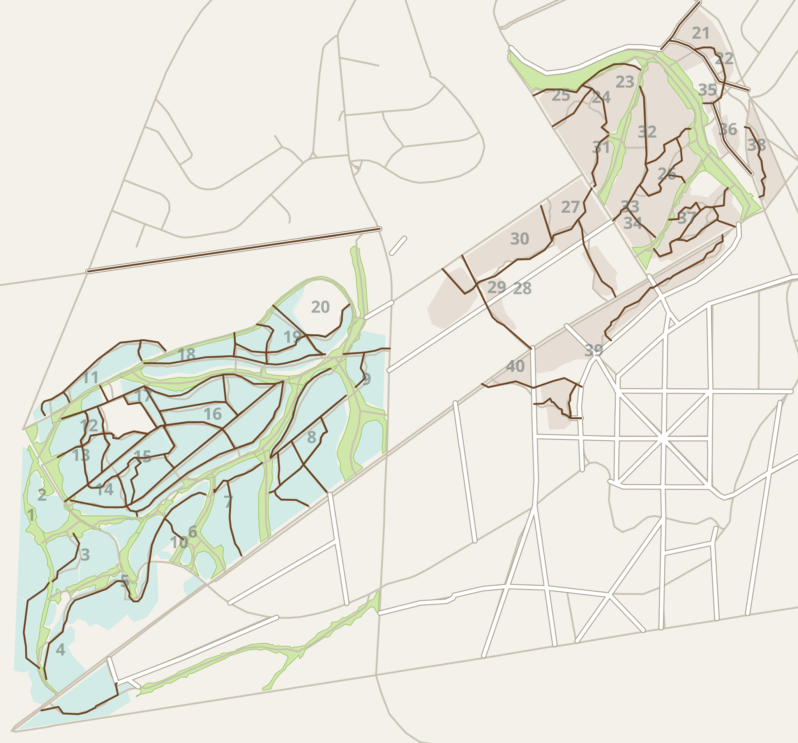

Soorten › Ericaceae
Gaultheria shallon
Appeltjesblad
Engels: Salal
familie Ericaceaegeslacht Gaultheria (bergthee)loofhout
In het arboretum
5bomen
1reeksen
0losse bomen
2019oudste aanplant
Staat in groep 5: Oregon, Kustgebergte.

Standplaatsen
| Groep | Wat | Plantjaar | Omtrek | |
|---|---|---|---|---|
| 5B Omgeving Port Orford | reeks van 5 | 2019 | – | kaart |
Meer lezen
- Plants of the World Online (Kew): naam, verspreiding
- Trees and Shrubs Online: beschrijving en teelt
- Wikipedia
Standplaatsen, aantallen, plantjaren en omtrek: interactieve kaart van het Geografisch Arboretum Tervuren; namen in andere talen: soortenlijst van het arboretum.